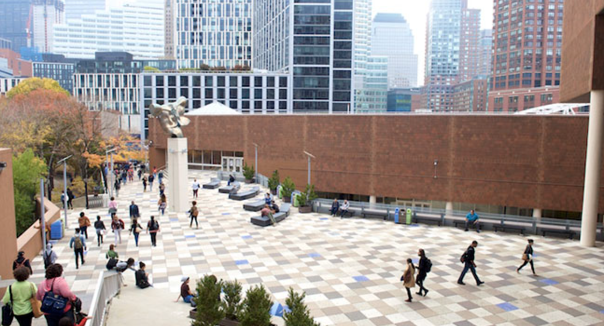

I am currently studying at Borough of Manhattan Community College (BMCC), located in New York City, specifically in the borough of Manhattan.
My major is Computer Science. This semester, I'm taking courses in Software development, Physics, Linear algebra, and Principles in Information Technology and Computation .
Outside of academics, I participate in hackathons.
BMCC is part of the City University of New York (CUNY) system. It was founded in 1963 and has since become one of the largest community colleges in the CUNY system.
BMCC's main campus is located in the vibrant neighborhood of Tribeca, with additional facilities in nearby areas.
Notable alumni of BMCC include actor Vin Diesel, rapper Nicki Minaj, and politician Antonio Pagan.
Back to About Me My Resume